普特融合 · 教育實務章節閱讀版
CHAPTER 01 / 策略 01–13
師生溝通與互動技巧
讓對話重新流動
本章分析面對爭論、挑戰與僵局，從暫停對話、保留尊嚴、清楚說理與傾聽開始。重點是建立信任，讓規範有機會被理解。
以下文字已逐張對照原頁校對；各牌卡仍可展開「對照原文」。
暫緩爭論
當對話卡死，先讓神經系統重置。
當學生陷入情緒死胡同且不斷用一般邏輯與教師爭執時，當下不需與之進行激烈的邏輯辯論，適時暫停對話以免衝突擴大。
情境
當對話落入情緒死胡同，學生持續以自身的單向邏輯與教師進行激烈且無效的爭執時。
教師行動
辨識出當下已無法理性溝通，教師應主動踩剎車，提議暫時休息沉澱，果斷停止當下的對話，防止衝突進一步擴大。
核心心理
當學生處於高張力的情緒超載狀態時，大腦的理智中樞往往暫時停擺。允許「溝通留白」，是給予神經系統重置的自我調節時間，待其恢復執行功能後再行對話，此為融合教育中關鍵的行為支持策略。
對照原文 · PDF 第 11 頁
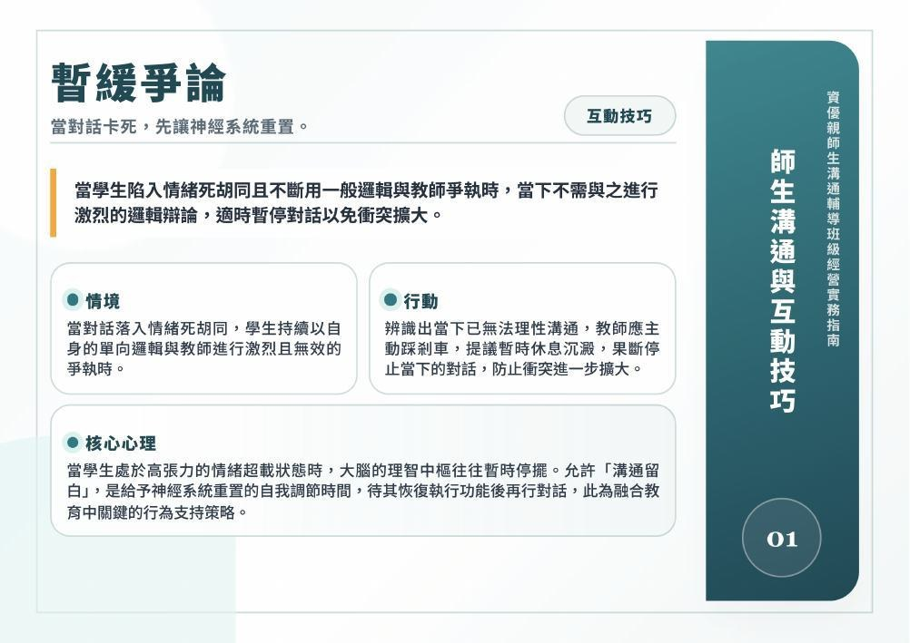
查看牌卡插畫 · PDF 第 10 頁
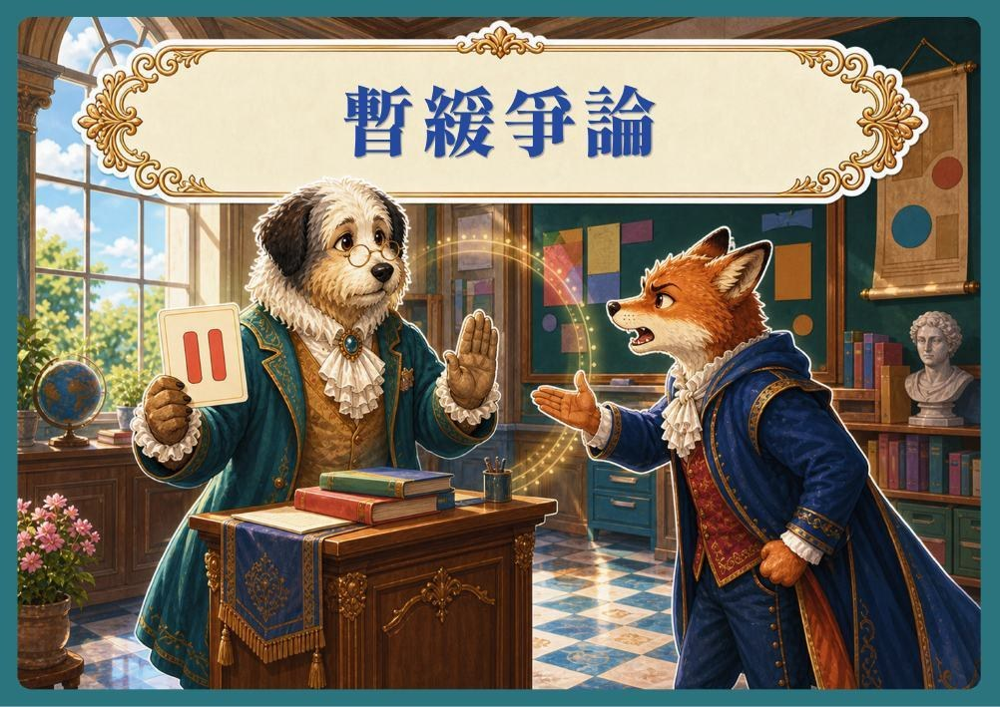
私下勸導
保留尊嚴，防衛才會鬆動。
資優生自尊心高，當他們在課堂上表現不當時，教師不應當眾糾正，而是利用下課私下溝通，指出說話方式會影響他人接收。
情境
當資優生在課堂中表現不佳（如干擾課程、嘲弄同儕）、違反班級常規，或需要被糾正行為時。
教師行動
避開全班的視線，不以公開提問或暗示的方式檢視錯誤，而是將學生請至一旁個別對話，客觀表達教師的期待與規範。
核心心理
資優學生往往具備極強的自我意識與極高的自尊心。運用「個別指導」能有效卸下他們的心理防衛機制，落實普特融合中尊重個體尊嚴的理念，避免因公開指責誘發強烈對立。
對照原文 · PDF 第 13 頁
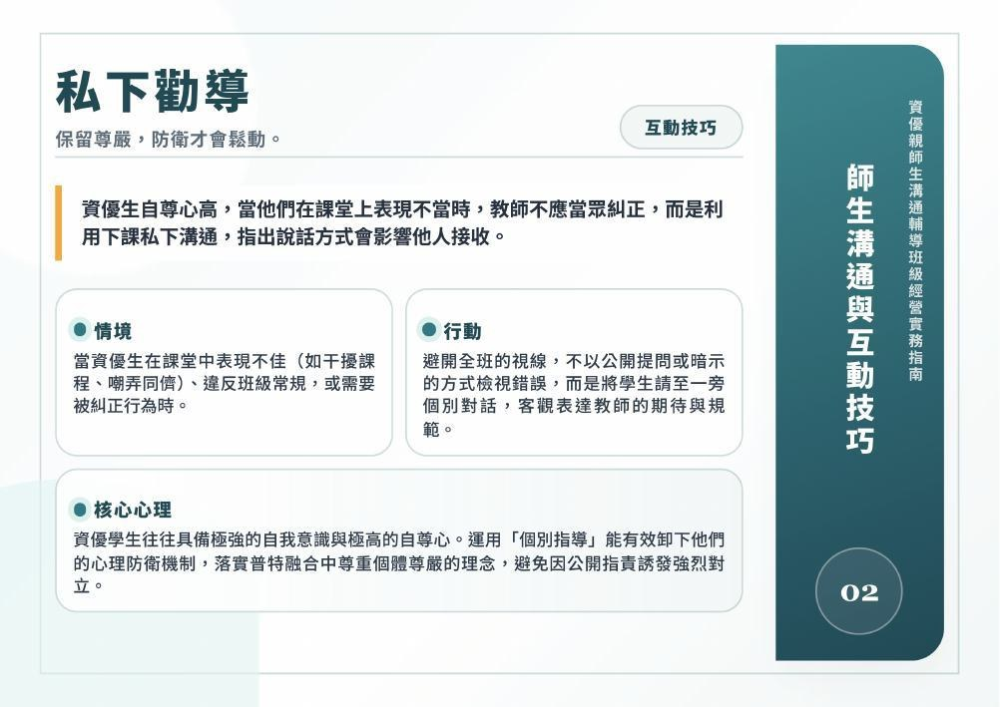
查看牌卡插畫 · PDF 第 12 頁
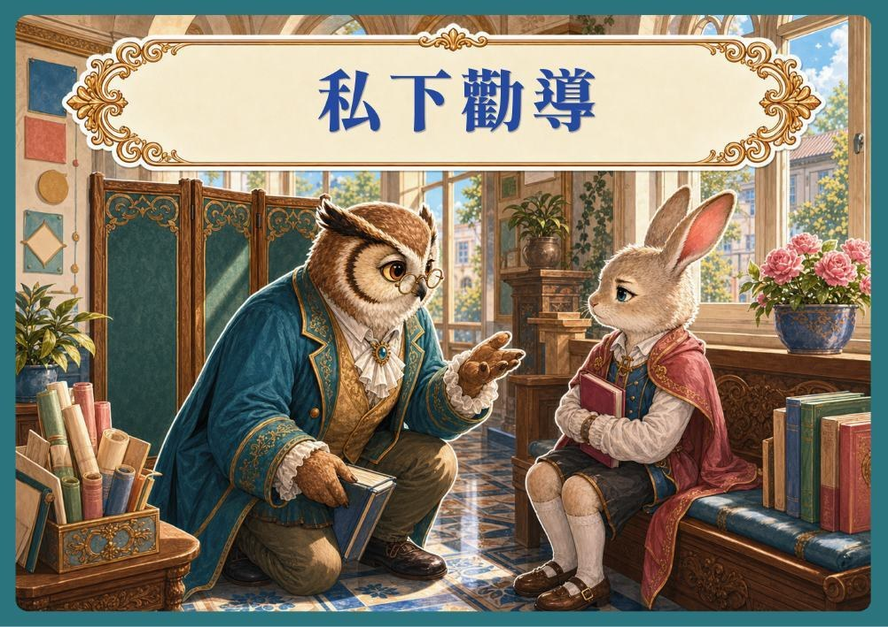
巧設台階
給出口，事件才下得來。
處理衝突時，不當場指責對方不對；教師設計讓彼此都能收場的台階，讓愛面子的資優生保全顏面而願意退讓。
情境
師生之間發生意見衝突，或學生固執己見，導致雙方處於僵持不下的尷尬局面。
教師行動
教師主動創造一個雙方都能接受的折衷方案或對話出口，不強求學生必須當場認錯低頭，讓事件能有尊嚴地圓滿落幕。
核心心理
理解學生因高自尊而產生的「拉不下臉」。透過成人主動搭建溝通橋樑，能展現教師的包容與彈性，並在不破壞師生安全依附關係的前提下解決問題。
對照原文 · PDF 第 15 頁
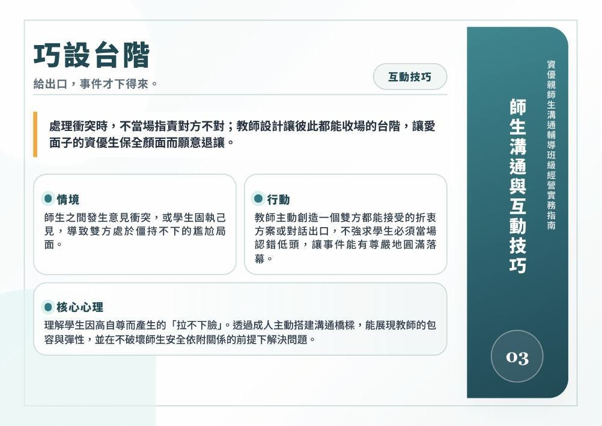
查看牌卡插畫 · PDF 第 14 頁
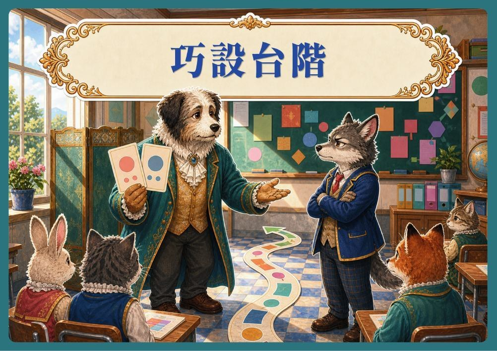
說之以理
邏輯通了，規範才進得去。
資優生容易與權威型老師起衝突。越用權威壓制，反抗越激烈；反之，只要好好分析道理，他們的邏輯通了就能接受。
情境
學生對教師的管教方式或班級規範感到不服，表現出抗拒、質疑甚至挑戰的態度。
教師行動
放下傳統「上對下」的威權管教姿態，運用客觀事實、數據或因果邏輯進行平等的對話，詳細說明規範背後的核心用意。
核心心理
資優生具備強烈的批判性思維，需要透過「意義建構」來理解世界。以「邏輯說服」取代「權力壓制」，能切中其認知運作模式，促使他們發自內心地認同並服從規範。
對照原文 · PDF 第 17 頁
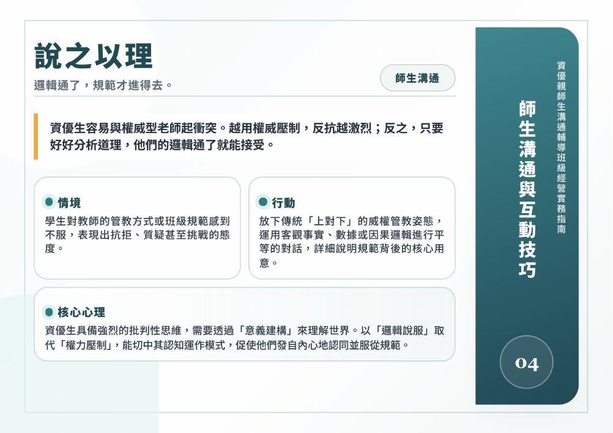
查看牌卡插畫 · PDF 第 16 頁
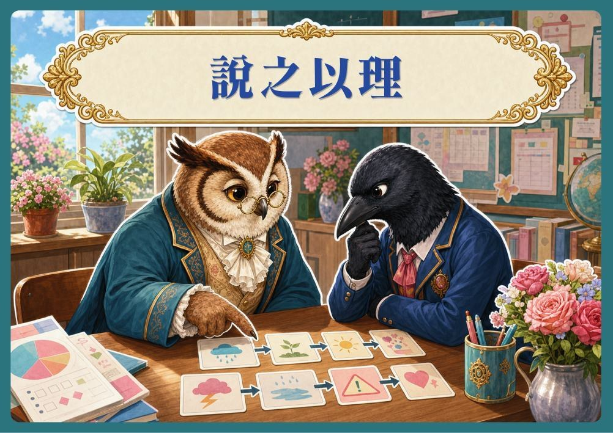
專業彈性
把挑戰轉成討論。
當學生或家長為學術細節挑戰老師時，教師可退一步說明學術見解有多種可能，不硬碰硬，讓實際效果帶動態度軟化。
情境
學生或具備專業背景的家長，針對某個學科知識點提出尖銳質疑，甚至挑戰教師的標準答案時。
教師行動
保持開放與讚賞的態度，引導全班討論該議題的多元可能，不急於硬碰硬捍衛自己的解答。
核心心理
資優生具有旺盛的求知慾及探究真理的執著。展現教學上的「知識彈性」，能將挑戰轉化為深度學習的契機，體現普特融合課堂中鼓勵多元思考的優質氛圍。
對照原文 · PDF 第 19 頁
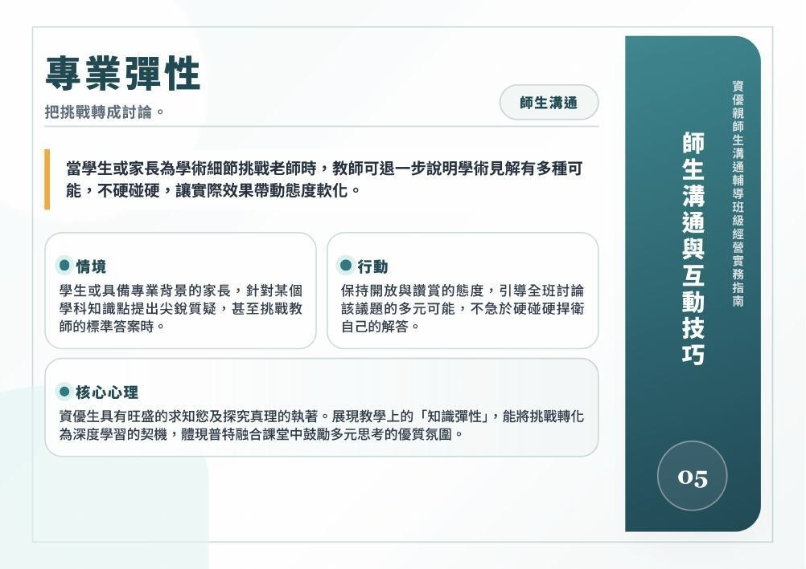
查看牌卡插畫 · PDF 第 18 頁
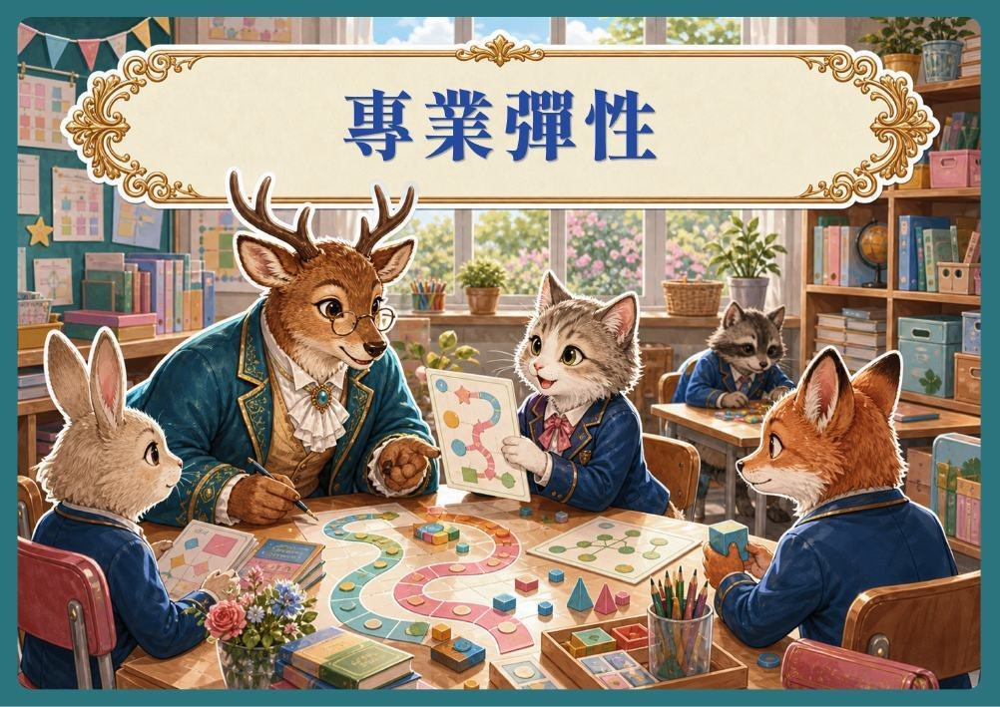
坦承錯誤
承認疏失，比硬撐更有權威。
資優生在乎對錯與公平，且認為事情沒有灰色地帶。一旦老師被指出錯誤，切忌為了面子硬拗，否則將失去信任。
情境
教師在課堂講授、批改作業或處理班級事務時發生疏漏，且被資優學生當面敏銳地指出。
教師行動
坦然承認疏失並大方地向學生道謝，展現負責的態度，並立即於課堂上或後續進行修正與調整。
核心心理
這類學生對於「公平正義」與「是非對錯」有著極高的檢視標準。教師親自示範「勇於認錯」，不僅能贏得他們深層的信任，更是絕佳的社會認知與身教示範。
對照原文 · PDF 第 21 頁
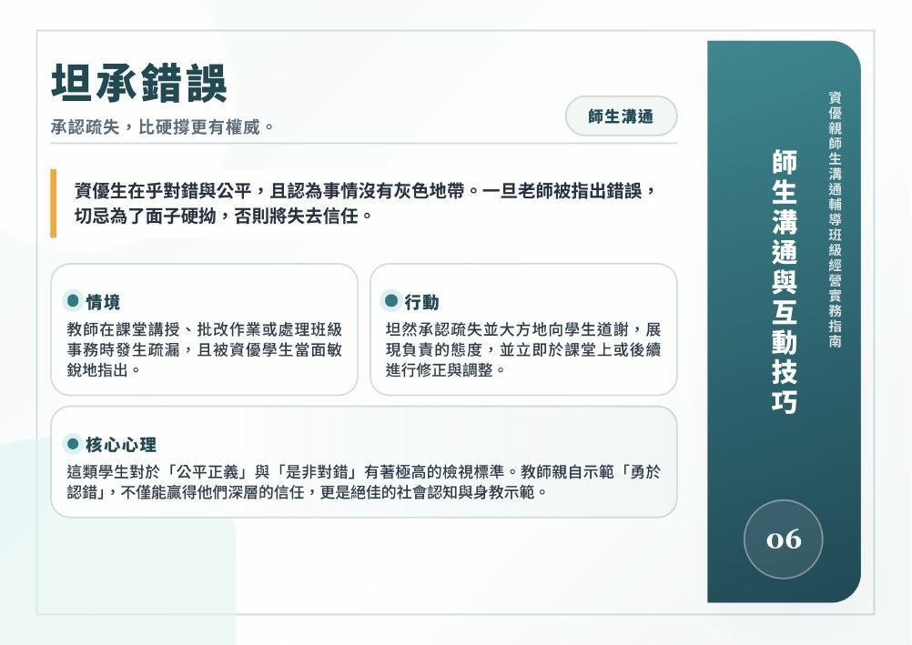
查看牌卡插畫 · PDF 第 20 頁
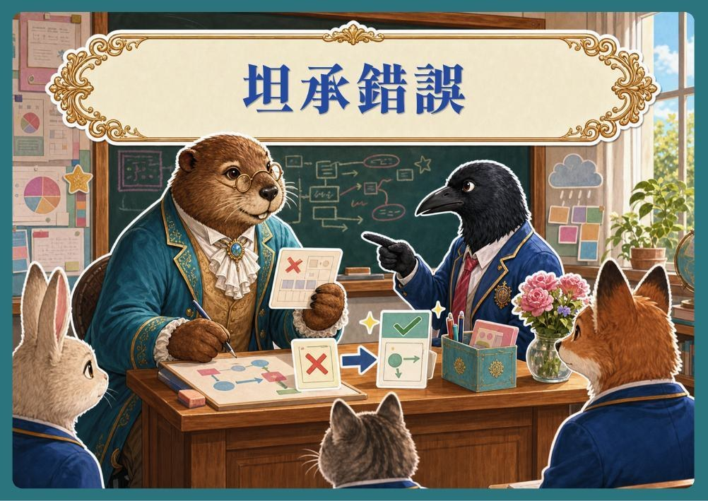
專業折服
用學科底蘊建立智識信任。
資優生對專業能力強的老師具有高度敬意。教師在學科專業上表現出色，他們自然會心服口服，減少挑戰權威的行為。
情境
剛接手新班級，面對資優學生對教師教學能力、知識深度的試探或懷疑。
教師行動
在課堂中適時展現深厚的學科底蘊，補充課本以外的延伸知識，或提出具高度啟發性的進階問題供學生思考。
核心心理
高認知能力的學生往往容易受到「智識權威」的吸引與折服。透過展現扎實的學術專業度，能迅速建立教師在學生心中的引領者地位，大幅降低後續班級經營的阻力。
對照原文 · PDF 第 23 頁
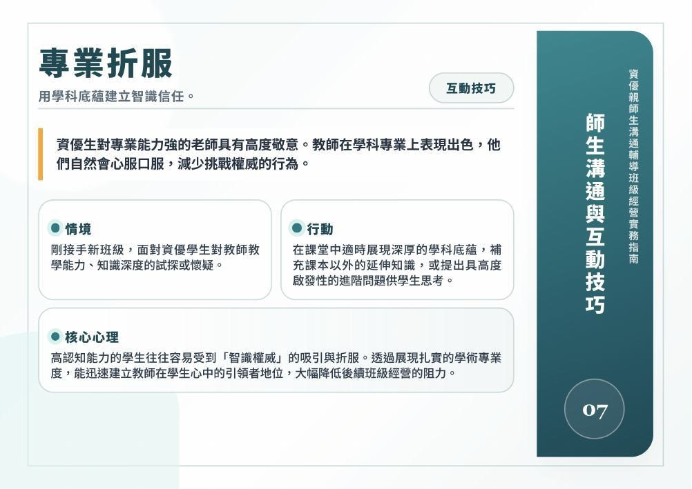
查看牌卡插畫 · PDF 第 22 頁
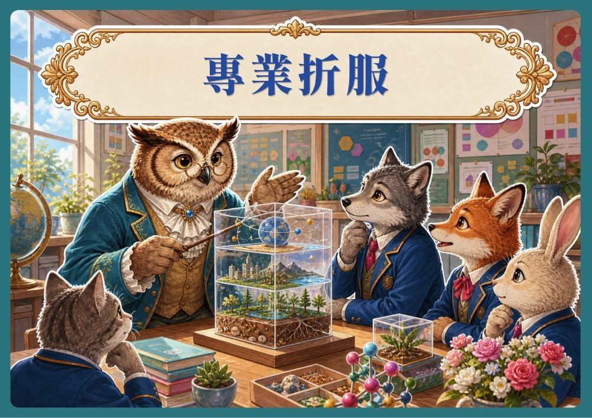
收起尖銳
語氣放軟，界線仍可清楚。
當教師講話語氣較嗆或具威脅感時，資優生會立刻武裝自己，甚至故意挑戰老師的專業與權威來自我防衛。
情境
教師在糾正學生，或自身情緒不佳時，不自覺表現出強勢、急躁或帶有壓迫的態度。
教師行動
刻意放緩說話語速與音量，使用溫和且堅定的中性語氣溝通，全面剔除對話中的威脅與攻擊性詞彙。
核心心理
面對具備「過度激動特質」的資優生，強烈的語氣極易誘發他們的防衛機制（戰鬥或逃跑反應）。柔和的溝通能有效穩定其神經系統，促進良性的雙向對談。
對照原文 · PDF 第 25 頁
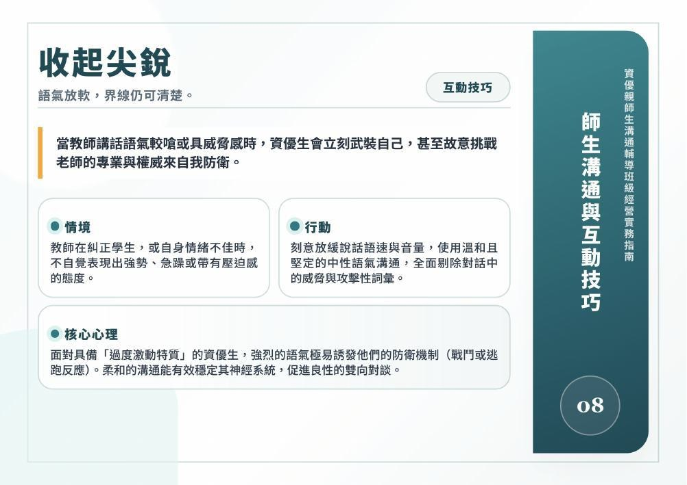
查看牌卡插畫 · PDF 第 24 頁
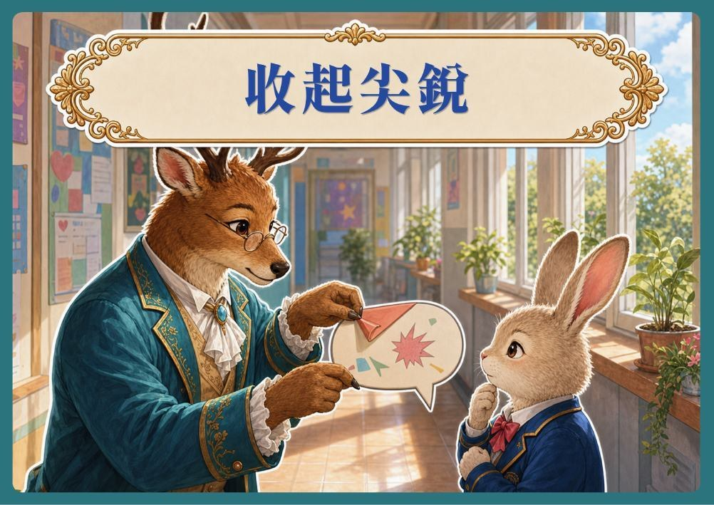
慎用語氣
玩笑若踩到底線，就是傷害。
教師應極度留意言語是否觸碰特殊生的底線。看似玩笑的服藥、病徵或狀態評論，可能被理解為挖苦或諷刺。
情境
教師試圖以玩笑活絡氣氛，或是針對身心狀況特殊（如服藥中）的資優生進行日常關懷與行為提醒時。
教師行動
發言前務必審慎評估，避免使用反諷、揶揄或暗示性的字眼；絕不將學生的生理特質、治療狀況或病徵作為玩笑或責備的素材。
核心心理
資優生及雙重特殊生（2e）往往具備人際或感官上的「高敏感特質」，對語言極為敏銳且容易過度解讀。建立無歧視且字義明確的友善溝通，是預防心理創傷與建立安全依附關係的基石。
對照原文 · PDF 第 27 頁
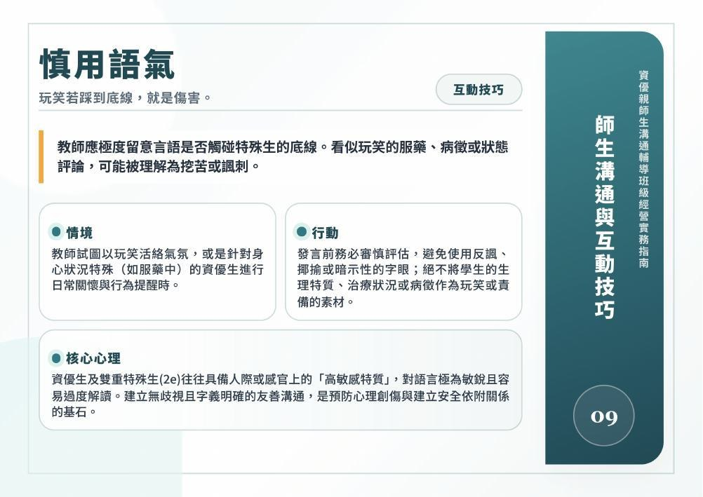
查看牌卡插畫 · PDF 第 26 頁
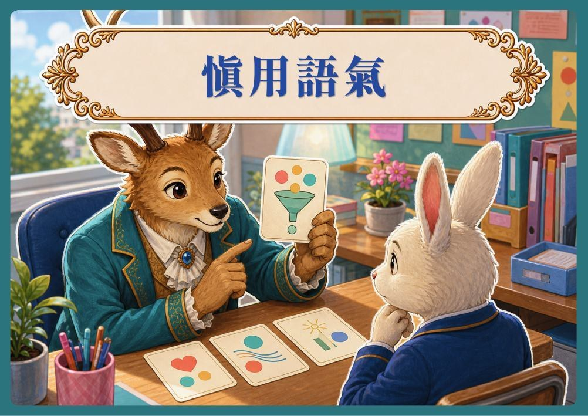
邏輯切割
老師道歉，學生也要負責。
師生衝突且教師用詞過重時，學生可能緊咬語病拒絕認錯。此時須明確切割：教師為用詞道歉，學生也須為行為道歉。
情境
衝突過程中教師不慎失言，學生藉此緊抓語病轉移焦點，試圖逃避對自身不當行為的咎責。
教師行動
清晰界定雙方的責任歸屬，教師先大方為自身的情緒字眼致歉，隨後堅定要求學生必須正視並承擔其違規事實。
核心心理
資優生善於運用邏輯盲點進行辯論與防禦。透過「責任釐清」的溝通策略（一碼歸一碼），能瞬間阻斷其轉移焦點的企圖，引導他們回歸客觀，評估自我行為的對錯。
對照原文 · PDF 第 29 頁
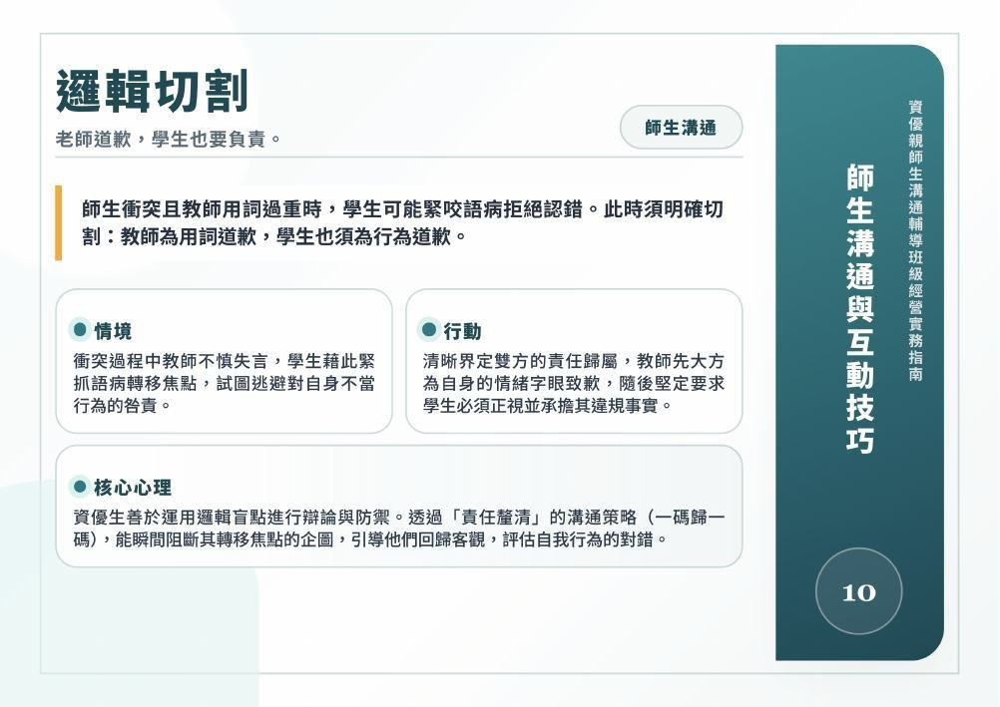
查看牌卡插畫 · PDF 第 28 頁
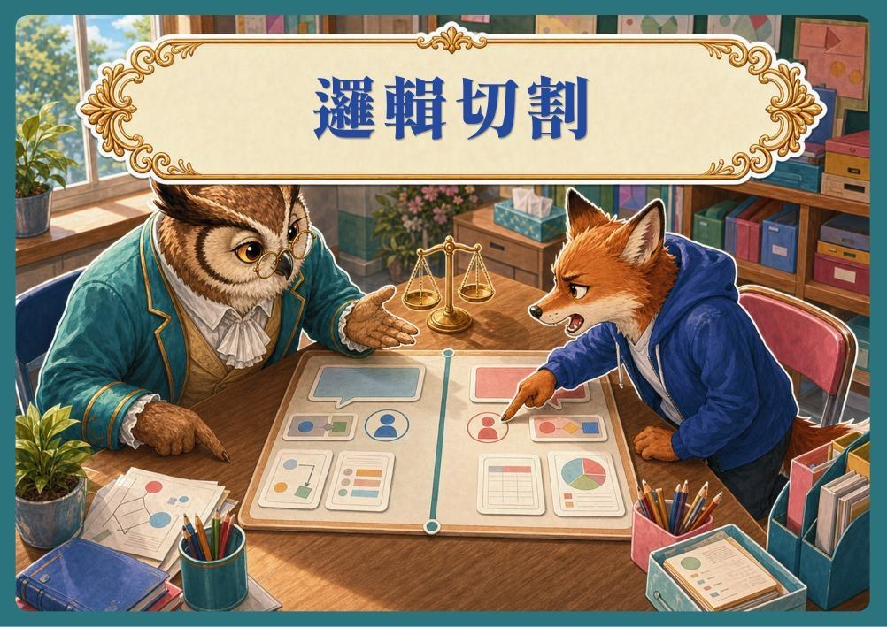
順藤摸瓜
先進入他的邏輯，再帶回共識。
部分執著於對錯的學生，在單獨面談時，只要教師順著他的邏輯對話，通常能溝通無礙。
情境
學生對某個規定或事件展現出極度的固執，陷入單向的思維迴圈（例如鑽研法規條文來為自己辯護）。
教師行動
不直接反駁其觀點，而是先進入他的思考脈絡，順著其推論基礎進行對談，再逐步引導至教師期望的共識。
核心心理
面對具有「認知固著」傾向的學生，與其硬碰硬對抗，不如「同理並借用其邏輯」。從內部解開他們的認知結點，能更省力且有效地達成溝通目的。
對照原文 · PDF 第 31 頁
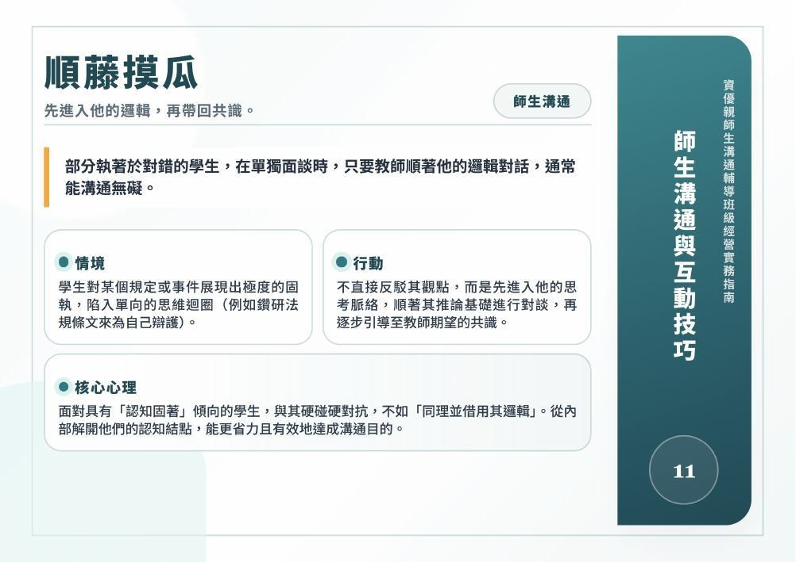
查看牌卡插畫 · PDF 第 30 頁
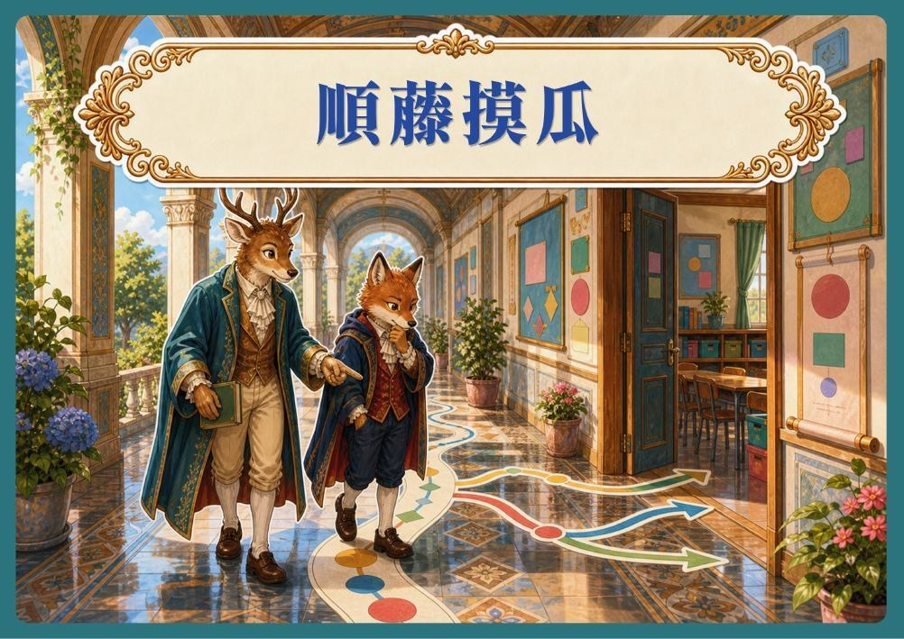
綜合角色
穩定、立體，不被單一標籤鎖住。
資優生對老師的標籤化極為明顯。教師應有意識地經營形象，成為穩定陪伴的綜合角色，避免成為學生一開始就針對的目標。
情境
資優學生習慣對周遭的成人進行快速歸類與評價，甚至針對特定類型的教師進行挑戰。
教師行動
在日常互動中展現多元面向，例如在常規要求上堅持原則，但在私下對談時又展現溫暖關懷，有意識地經營形象。
核心心理
資優生具備強烈的分析與「標籤化」傾向。展現立體且情緒穩定的成人典範，能降低學生因過度簡化而產生的預設立場，避免成為學生針對的標靶。
對照原文 · PDF 第 33 頁
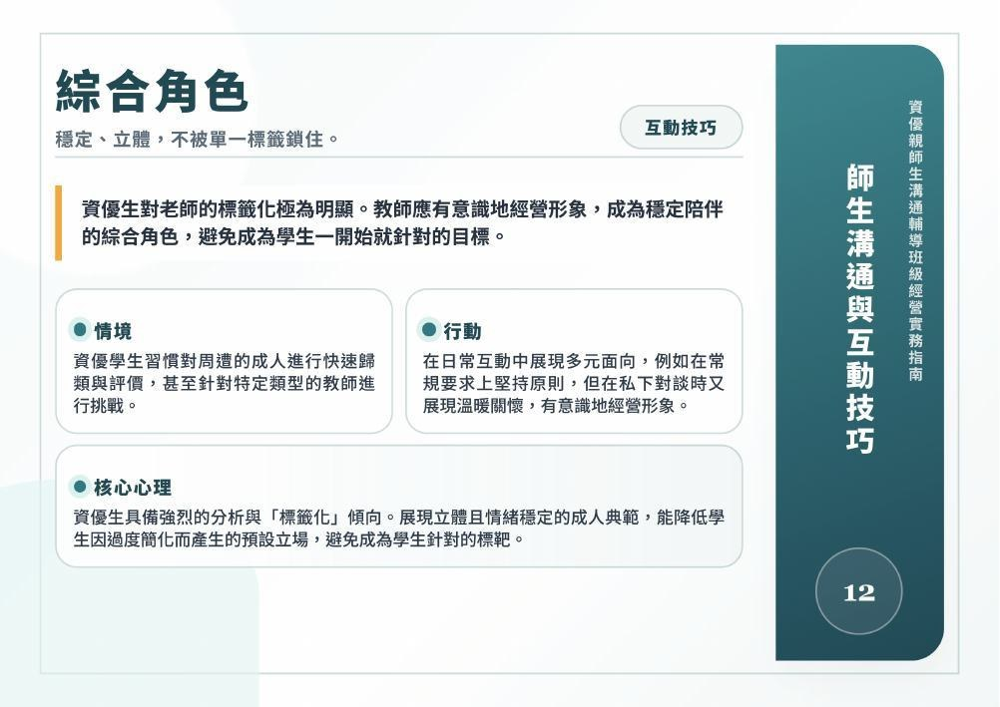
查看牌卡插畫 · PDF 第 32 頁
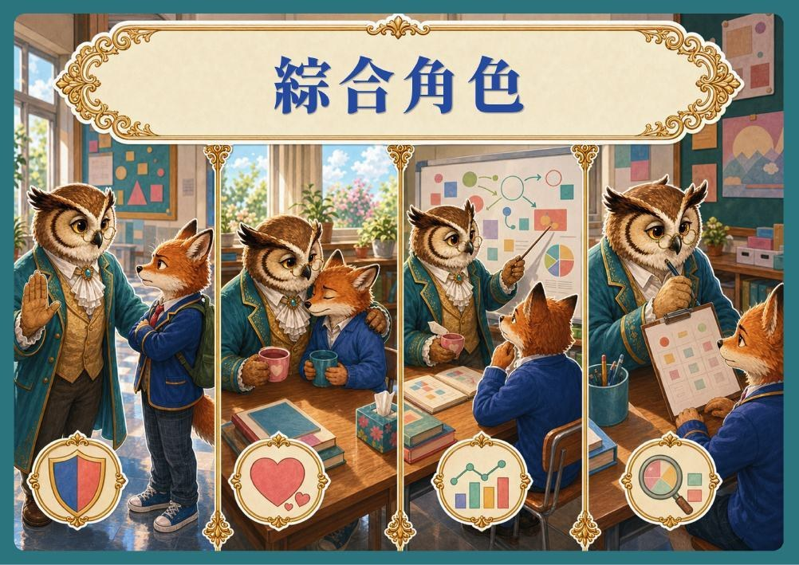
傾聽接納
先讓他被聽見，再處理問題。
面對資優生為了維護權利而長篇大論，教師應先給予傾聽空間，不立即打斷或動怒。
情境
面對資優學生為了捍衛自身權益或理念，準備了豐富資料（如法規）並進行長篇大論的辯護時。
教師行動
先不急著打斷或動怒反駁，而是提供充分的時間與空間，以平穩的態度讓學生將想法完整表達出來。
核心心理
資優生常具備強烈的「道德絕對性」與「公平正義感」。透過積極聆聽，讓他們感受到自己的論述被成人「真正聽見並重視」，能有效降低其防衛姿態，滿足其尋求尊重的深層需求。
對照原文 · PDF 第 35 頁
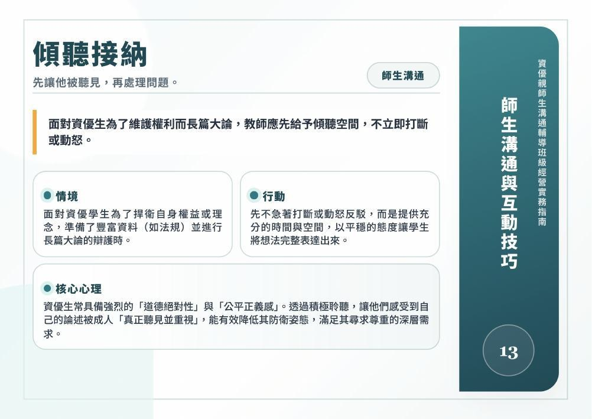
查看牌卡插畫 · PDF 第 34 頁
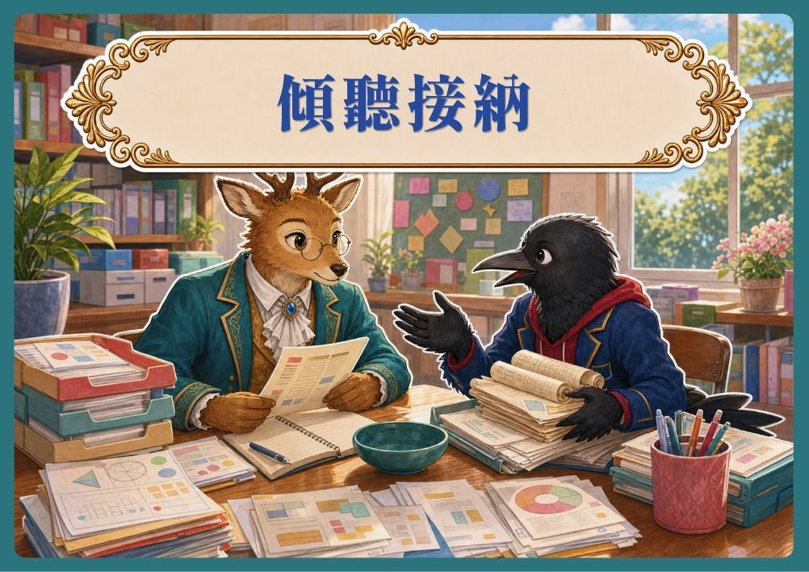